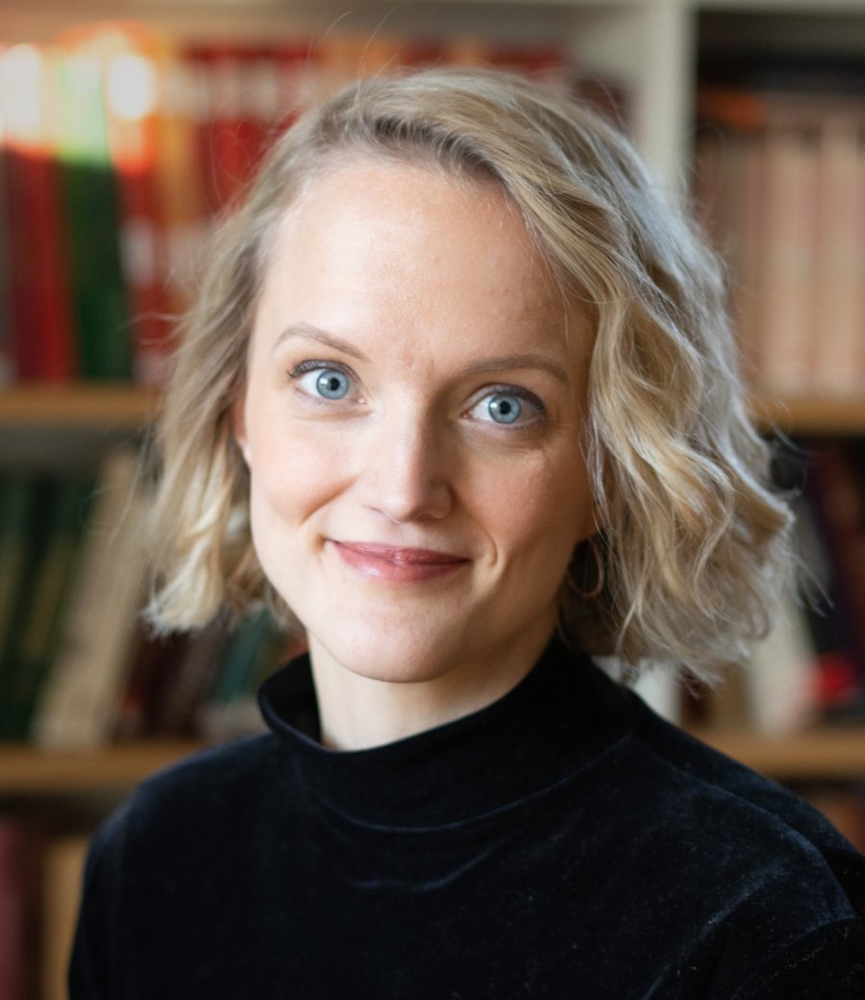

Gudlaug “Gulla” Olafsdottir
Postdoctoral researcher, Department of Political Science, Stockholm University
Researcher, Department of Peace and Conflict Research, Uppsala University
I am a post-doctoral researcher at the Stockholm Center on Global Governance, within the Political Science department at Stockholm University. I am also a part-time researcher at the Department of Peace and Conflict Research at Uppsala University, where I obtained my PhD in November 2024.
Broadly, my research focuses on the political dynamics of semi-democratic regimes, with a particular focus on electoral politics. At the SCGG, I am investigating different political regimes’ contestation of global governance. Moreover, with researchers at Uppsala University and the Nordic Africa Institute, I am investigating election boycotts and the conditions under which they are likely to yield concessions. My research to date covers topics relating to electoral violence and how it influences democratization, organized student violence, and conflict forecasting, using machine learning techniques to estimate the future risk of armed conflict.
Methodologically, I take a varied approach. Beyond applied statistical modelling, I have conducted qualitative field research in Turkey and Uganda, and contributed to several cross-national quantitative data collection efforts. I have been involved in multiple data collection projects. Within our project on election boycotts we have gathered data on boycotts globally from 1945-2024, I was one of two coders contributing to the development of the Deadly Electoral Conflict (DECO) data, I have contributed to the management and cleaning of a new dataset on university violence, and I have coded data on ethnic one-sided violence.
I enjoy engaging with policy-makers and practitioners and strive for my work to be anchored in real-world relevance. I have experience as an election observer, seconded as a Short-Term Observer to election observation missions of the OSCE/ODIHR by the Folke Bernadotte Academy. I have done consultancies for International IDEA and the Dag Hammarskjöld Foundation, and written policy briefs published by the Swedish Expert Group for Aid Studies, the Stockholm University Institute for Turkish Studies, and Women In International Security on women’s rights in post-conflict settings. Moreover, I currently serve on the Advisory Board of Polaris Electoral Observatory. I welcome opportunities for further engagement.
Staff pages: Stockholm University · Uppsala University